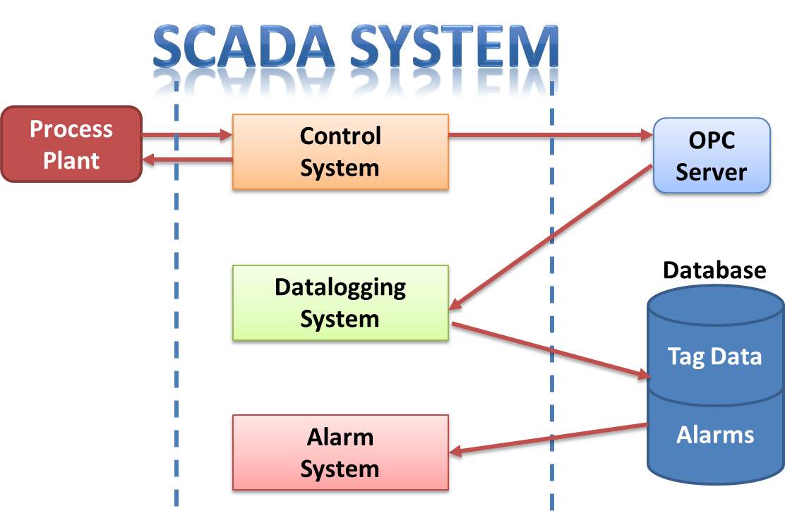

Az ipari kommunikációs és SCADA rendszerek II. kurzus tematikája:

- SCADA és HMI rendszerek
- PLC és SCADA/HMI rendszer összekötése, kommunikáció konfigurálása, TAG-ek konfigurálása
- Sémaképek készítése, statikus elemek, dinamikus elemek, animálás
- Sémaképek készítése, statikus elemek, dinamikus elemek, animálás
- Alarmok konfigurálása. Adatok, alarmok, események naplózása. Trendelés. Faceplate készítés. Scriptek írása
- Felhasználók és hozzáférési jogok menedzselése. Többnyelvű projektek készítése. Riportok készítése
- Web-alapú automatizálás. A folyamatirányítás és a termelésirányítás kapcsolata. MES, ERP. Komponens alapú automatizálás (CBA). OPC alapú rendszerintegráció
- Az RF kommunikáció alapjai. Antennák, karakterisztikák
- Bluetooth, ZigBee kommunikáció
- WLAN, IWLAN rendszerek
- Zárthelyi dolgozat
- Pótárthelyi dolgozat
- Vezeték nélküli ipari kommunikációs rendszerek diagnosztizálása
- Vezetékes ipari kommunikációs rendszerek diagnosztizálása